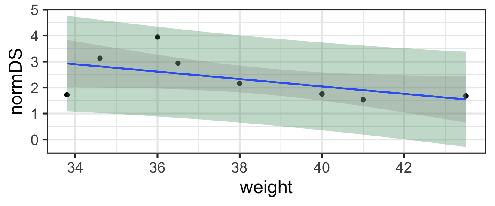
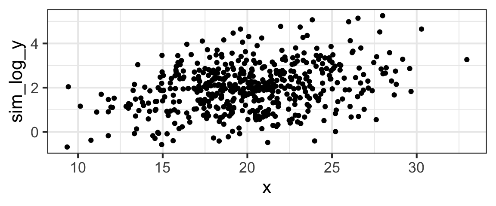

Learning Outcomes
In this module, we will build (just a little) on our tools to do inference on the simple linear regression model, devising methods to make predictions from a model with uncertainty (in other words, predictions with confidence intervals).
Then, we will consider one possible solution to some common problems with linear regression models: transformation of predictor and/or response variables. We already know there are a series of conditions that must be met for our model parameter estimates and inference to be valid. But what if the conditions are not met – what can we do?
If the main issues with a model include non-linearity and non-normality of residuals, then transforming variable(s) may offer a solution. Basically, we apply some function to a variable to “transform” it and then fit our model to the transformed data. In some cases, this can be a neat fix, but there can be trade-offs in the interpretation of the results (and their match with reality).
By the end of the module you will:
- Be able to compute confidence intervals and prediction intervals for fitted values from a linear regression
- Be competent to explain the difference between confidence and prediction intervals
- Have experience using the bulge rules to select an appropriate linearizing transformation for regression
- Be able to apply a Box-Cox transform to find the optimal normalizing power transformation of a response variable
- Be able to discuss reasons why applying a transformation might be a bad (or good) idea, in terms of interpretability of results and realism of the model.
These materials come from your text book, FAStR2 Chapter 6.4 and 6.6.
Confidence and Prediction Intervals
In the last module, we learned to generate confidence intervals (or do hypothesis tests) for the slope and intercept parameters of a simple linear regression.
But often, we are interested in using fitted regression models to predict response variable values in specific scenarios. In other words, we’re sometimes more interested in the predicted response variable values \(\hat{y}\) than the parameter estimates \(\beta_0\) and \(\beta_1\).
It’s a simple matter to compute point estimates of these fitted values: if we have an x-value of interest (let’s call it \(x_*\)), we just compute \(\hat{\beta}_0 + \hat{\beta}_1x_*\) to get our estimate.
But what about uncertainty?
Ways to Conceptualize Uncertainty in Predictions
Text book reference: FAStR Chapter 6.4.7
We could do this two ways!
- A confidence interval: We could find an interval that gives plausible values for “where the line is located”, taking into account uncertainty in the intercept and slope estimates. Another way of thinking about this is that it gives a plausible range of values for the expected value (mean) of the response variable for all hypothetical new observations with \(X = x_*\).
- A prediction interval: We could find and interval that gives plausible values for “the point cloud” of possible new observations, taking into account uncertainty in the slope and intercept, plus the residual variance. Another way of thinking about this is that it gives a plausible range of values for the response for one new datapoint with \(X = x_*\). Note that we’ve coined the new name prediction interval to differentiate it from the other one, this is really also a CI (just for a very specific scenario).
Practical Example and Calculations
In order to compute these confidence and prediction intervals, we’ll definitely need appropriate standard error estimates for the predicted values \(\hat{y}\). But before deriving them, let’s first review a practical example just to keep the big picture front and center.
Note: this video is from a great contemporary statistician and teacher, Mine Çetinkaya-Rundel - she’s awesome…
(You can also watch directly on YouTube if you prefer.
SE for a Confidence Interval
Text book reference: FAStR Chapter 6.4.7
If our goal is a confidence interval about \(\hat{y}\), then we need to examine the sampling distribution of
\[ \hat{Y}_* = \hat{\beta}_0 + \hat{\beta}_1x_*\] or (again using \(B_1\) and \(B_2\) to reinforce the thought that the parameter estimates can be thought of as random variables)
\[ \hat{Y}_* = B_0 + B_1x_*\]
Since \((\bar{x}, \bar{Y})\) is on the line, \(\bar{Y} = B_0 + B_1\bar{x}\) and we can substitute \(\bar{Y} - B_1\bar{x}\) for \(B_0\):
\[ \hat{Y}_* = \bar{Y} - B_1\bar{x} + B_1x_*\]
\[= \bar{Y} + B_1(x_* - \bar{x})\]
We already know that
\[\bar{Y} \sim \text{Norm}(\beta_0 + \beta_1\bar{x}, \frac{\sigma}{\mid \mathbf{1}\mid})\]
and from our expression for the SE of \(B_1\) (since \(x_*\) and \(\bar{x}\) are constants here),
\[ B_1(x_* - \bar{x}) \sim \text{Norm}(\beta_1x_* - \beta_1\bar{x}, \frac{\sigma(x_* - \bar{x})}{\mid \mathbf{x} - \mathbf{\bar{x}}\mid})\]
And we know that \(\bar{Y}\) and \(B_1\) are independent, so the variance of their sum is just the sum of their variances, and:
\[\hat{Y_*} \sim \text{Norm}\bigg{(}\beta_0 + \beta_1x_*, \sigma \sqrt{\frac{1}{\mid \mathbf{1} \mid ^2} + \frac{(x_* - \bar{x})^2}{\vert \mathbf{x} - \mathbf{\bar{x}}\vert^2}}\bigg{)}\]
Practically (substituting our sample statistics as parameter estimates and skipping the vector notation), we will estimate the standard error of this sampling distribution by $ s $ (like you saw in the video).
SE for a Prediction Interval
The result we just got will help us to find the SE for a prediction interval, since it already takes into account two of the three sources of uncertainty we need to account for (the slope and intercept and residuals).
We’ll start by considering the random variable \(Y_* \sim \text{Norm}(\beta_0 + \beta_1x_*, \sigma)\) which models a “new” (that is, indepdendent of the data used to fit the model) observation of the response for \(x = x_*\).
What is the sampling distribution of \(Y_* - \hat{Y}_*\)? Its standard error will help us compute the margin of error for our prediction interval. Luckily, again we can use the fact that the variance of a sum (or difference) is the sum of the variances, finding that
\[Y_* - \hat{Y}_* \sim \text{Norm}\bigg{(}0, \sigma \sqrt{1 + \frac{1}{\mid \mathbf{1} \mid ^2} + \frac{(x_* - \bar{x})^2}{\vert \mathbf{x} - \mathbf{\bar{x}}\vert^2}}\bigg{)}\]
So we can estimate the SE for a prediction interval via $ s $ (again, like you saw in the video).
R Shortcuts
Of course, it’s tedious to compute these estimates by hand (and you already saw a brief example of how to do it in R in the video).
To recap, you can compute confidence or prediction intervals in R using predict(). Assuming you have a fitted model m with response y and predictor x_star in dataset d, and you want an interval estimate of the fitted value for \(x = x_*\):
m <- lm(y ~ x, data = d)
new_data <- data.frame(x = x_star)
conf_int <- predict(m, newdata = new_data,
interval = 'confidence',
level = 0.95)
pred_int <- predict(m, newdata = new_data,
interval = 'prediction',
level = 0.95)If you wanted to make interval estimates for more than one value \(x_*\), you can just enter a list of values in new_data:
new_data <- data_frame(x = c(x_star1, x_star2, ...))Finally, if you want to plot one or both intervals on a scatter plot of the data, you can!
So you can actually see the result, let’s demonstrate with a regression predicting bonobo dominance score normDS by weight from the bonobos dataset.
gf_point(normDS ~ weight, data =bonobos) %>%
gf_lm(interval = 'prediction', color = 'black',
fill = 'seagreen') %>%
gf_lm(interval = 'confidence') 
Practice
Find an interval estimate for the assertiveness score (AssR) of Zeke, and 8-year-old male bonobo, based on the dataset bonobos (which also contains the variable Age).
m <- lm()
new_data <- data.frame()
predict()m <- lm(AssR ~ Age, data = bonobos)
new_data <- data.frame()
predict()m <- lm(AssR ~ Age, data = bonobos)
new_data <- data.frame(Age = 8)
predict()m <- lm(AssR ~ Age, data = bonobos)
new_data <- data.frame(Age = 8)
predict(m, newdata = new_data, interval = ...)m <- lm(AssR ~ Age, data = bonobos)
new_data <- data.frame(Age = 8)
predict(m, newdata = new_data, interval = 'prediction')More Practice
The dataset earn contains data on people’s income (earn) and their height in inches (height) from a 1994 survey of Americans. Fit a model predicting income as a function of height and then produce an interval estimate for the income of people who are 6’4” (76 inches) tall.
m <- lm()
new_data <- data.frame()
predict()m <- lm(earn ~ height, data = earn)
new_data <- data.frame()
predict()m <- lm(earn ~ height, data = earn)
new_data <- data.frame(height = 76)
predict()m <- lm(earn ~ height, data = earn)
new_data <- data.frame(height = 76)
predict(m, newdata = new_data, interval = ...)m <- lm(earn ~ height, data = earn)
new_data <- data.frame(height = 76)
predict(m, newdata = new_data, interval = 'confidence')Transformations - Motivation
Text book reference: FAStR Chapter 6.7
We may sometimes want to model a relationship between two variables that is not linear (or we may find that linear regression model residuals are not normal).
In some cases, we might have theoretical reasons to expect a specific mathematical form for the nonlinear relationship – for example, if a response depends on the square of a certain predictor, or if the logarithm of a response variable depends linearly on a certain predictor. In these cases, of course, it makes sense to consider using the transformed variable as a predictor or response.
In other cases, we may not have a theoretical justification for a particular choice of transformation; rather, we might choose it because it results in a linear relationship between our transformed variables of interest. If we’re in this situation – hunting for the right transformation to use – how do we decide which transformation(s) to use?
Ladder of Re-Expression and Bulge Rules
Text book reference: FAStR Chapter 6.6.1
One option is to use what are known as the ladder of re-expression and the bulge rules to choose transformations that are likely to work.
This system was devised by Frederick Mosteller and John Tukey in the 1970s, and is still elegant enough in theory to turn up in textbooks today. In practice, it feels a bit ad-hoc to many students…Let’s check it out!
(You can also watch directly on YouTube if you prefer.
Bulge Diagram
Text book reference: FAStR page 507
For reference, here are the ladder and bulge diagrams:

Non-Integer Transformations
Why, you may ask, does that ladder have to have rungs?
It’s a fair question!
(What do I mean by “rungs”? Well, who says that you have to transform your variables only using integer powers? If \(x^2\) is too much and \(x\) is not enough, why not try \(x^{1.64}\)?)
The problem is, if we’re going to consider an infinite set of possible power transformations, then “guess and check” isn’t going to cut it as a method to choose the one we ought to use…
Box-Cox Power Transformations
One common approach to transforming (for linearity, normality, constant variance) in a linear regression model is to use a method proposed by George Box and David Cox in 1964.
Using an approach inspired by maximum likelihood estimation (check out the paper linked above if you want all the details, which you will not be held accountable for), the Box-Cox transformation estimates the optimal power \(\lambda\) that transforms a vector of observations \(\mathbf{x}\) according to:
\[ \mathbf{x} \mapsto \begin{cases} \frac{(x^\lambda - 1)}{\lambda}, & \text{if}\ \lambda \neq 0 \\ log(x), & \text{if}\ \lambda = 0 \\ \end{cases} \]
In R, the function powerTransform() from package car computes Box-Cox transforms for the response variable in a linear regression.
For example, let’s consider our dinosaur dataset. Researchers Campione and Evans measured bone lengths and body masses of many 4-legged animals and found a relationship between body mass and bone dimensions – which they then used to predict body masses of dinosaurs based on their bones.
So, we have the non-dino data:
## Warning: Removed 21 rows containing missing values (geom_point).Earlier, we used the bulge rules to determine that perhaps a regression of log(BodyMass) vs. log(HumerusLength) would give a more linear result.
Using car::powerTransform(), we can search for the best power transformation of the BodyMass variable (to get the most-normal-possible residuals):
power_trans <- car::powerTransform(BodyMass ~ HumerusLength,
data = dinos)
summary(power_trans)## bcPower Transformation to Normality
## Est Power Rounded Pwr Wald Lwr Bnd Wald Upr Bnd
## Y1 0.2212 0.22 0.1898 0.2525
##
## Likelihood ratio test that transformation parameter is equal to 0
## (log transformation)
## LRT df pval
## LR test, lambda = (0) 78.08284 1 < 2.22e-16
##
## Likelihood ratio test that no transformation is needed
## LRT df pval
## LR test, lambda = (1) 2318.916 1 < 2.22e-16According to these results, we should use \(\text{BodyMass}^{0.22}\) as our response variable. The summary() also reports results of two likelihood-ratio tests: one to test the null hypothesis that \(\lambda = 0\) (and the best transform is the log()) versus the alternate that the unconstrained estimate of \(\lambda\) is best (i.e., we should stick with 0.22); and one to test the null hypothesis that no transformation is needed at all. Both of those null hypotheses should be rejected, based on the results.
How does that data look if we do that transformation?
## Warning: Removed 21 rows containing missing values (geom_point).Not too bad, actually!
What about x?
However, unlike what we were doing with the bulge rules, a powerTransform() analysis will never alter the predictor, only the response variable.
We could consider a normalizing power transformation on it, although the argument for requiring the predictor to be normally distributed is much weaker than the one that aims to force the residuals to be normal.
If we try it:
## bcPower Transformation to Normality
## Est Power Rounded Pwr Wald Lwr Bnd Wald Upr Bnd
## dinos$HumerusLength -0.2536 -0.33 -0.394 -0.1132
##
## Likelihood ratio test that transformation parameter is equal to 0
## (log transformation)
## LRT df pval
## LR test, lambda = (0) 13.02747 1 0.00030696
##
## Likelihood ratio test that no transformation is needed
## LRT df pval
## LR test, lambda = (1) 359.1195 1 < 2.22e-16Then, re-doing the response transformation with this predictor:
## bcPower Transformation to Normality
## Est Power Rounded Pwr Wald Lwr Bnd Wald Upr Bnd
## Y1 -0.1297 -0.13 -0.1501 -0.1093
##
## Likelihood ratio test that transformation parameter is equal to 0
## (log transformation)
## LRT df pval
## LR test, lambda = (0) 141.7501 1 < 2.22e-16
##
## Likelihood ratio test that no transformation is needed
## LRT df pval
## LR test, lambda = (1) 2873.046 1 < 2.22e-16And plotting:
## Warning: Removed 21 rows containing missing values (geom_point).Similar to the look of our bulge-rule results.
A point to consider, though: log(mass) and log(length) are easier units to conceptualize than \(\text{mass}^{-0.13}\), etc.
In addition, in applied data analysis situations, we should verify that all conditions are met before interpreting the model(s) or doing any inference! (It’s just left out here to focus on the current topic.)
Transformations and Model Structure
So far, we have a few reasons to be a little hesitant about transforming data for regression when there’s no theoretical justification for it: it can make interpretation challenging (predictions and responses are no longer expressed in natural units), and the process feels a bit ad-hoc (like the analyst has to make arbitrary judgment calls sometimes).
Another key consideration in how transforming the response affects the structure of the model. Here, we will consider the (very important and very common) logarithmic transformation, although related consideration can arise for other transforms.
Predictors
Our simple linear regression model is:
\[ y = \beta_0 + \beta_1x + \epsilon\]
If we log-transform \(y\), we get
\[ log(y) = \beta_0 + \beta_1x + \epsilon\]
or alternatively
\[ y_i = e^{\beta_0 + \beta_1x_i + \epsilon_i}\]
If we let \(b_0 = e^{\beta_0}\), \(b_1 = e^{\beta_1}\), and \(c = e^{\epsilon_i}\), we have
\[ y_i = e^{\beta_0 + \beta_1x_i + \epsilon_i} = b_0 \cdot b_1^{x_i} \cdot c\]
On the scale of the original data \(y_i\), the predictors come in multiplicatively.
This mean that the interpretation of the slope coefficient changes, a lot. Instead of a unit change in the predictor yielding a certain absolute increment in the response, it here results in a relative increment.
An example may help to clarify: consider a dataset containing survey data from 1994 on Americans’ height (in inches) and also their annual income in dollars. We might consider modelling income on a logarithmic scale for several reasons; it’s not too hard to interpret, and if incomes are all positive values, the transformation will prevent any fitted model from ever predicting negative incomes.
##
## Call:
## lm(formula = log(earn) ~ height, data = earn)
##
## Residuals:
## Min 1Q Median 3Q Max
## -4.4209 -0.3975 0.1394 0.5833 2.3536
##
## Coefficients:
## Estimate Std. Error t value Pr(>|t|)
## (Intercept) 5.778506 0.450927 12.815 <2e-16 ***
## height 0.058817 0.006728 8.743 <2e-16 ***
## ---
## Signif. codes: 0 '***' 0.001 '**' 0.01 '*' 0.05 '.' 0.1 ' ' 1
##
## Residual standard error: 0.8931 on 1190 degrees of freedom
## Multiple R-squared: 0.06035, Adjusted R-squared: 0.05957
## F-statistic: 76.44 on 1 and 1190 DF, p-value: < 2.2e-16Our slope is about 0.06, which means that for every inch increase in height, earnings increase by a multiplicative factor of about \(e^{0.06} = 1.06\).
This kind of makes intuitive sense in this particular case – if taller people really do earn more, you’d expect the “tall person bonus” to be bigger for people with higher-paying jobs to start with and lower for lower-wage earners – it would be odd if, for example, people who were 6 inches taller earned $1200 more per year (regardless of whether their annual salary was $15,000 or $150,000).
So, if you’re considering a log-transformed response, you should also make sure that multiplicative effects of your predictor make sense in context (and/or make sure the scatter plot looks linear)!
Residuals
There’s a similar (or related) issue with the residuals, when the response variable has been log-transformed.
Thinking on the “original” scale of \(y_i\), a linear regression without any transformation says that the distance of points from the line is 0 on average, and has some constant standard deviation \(\sigma\).
With a log-transformed response variable, recall our equation was
\[ y_i = e^{\beta_0 + \beta_1x_i + \epsilon_i} = b_0 \cdot b_1^{x_i} \cdot c\]
So observations deviate from the line by some multiplicative factor \(c\). \(c\) is \(e^{E(\epsilon_i)} = e^0 = 1\) on average. But since \(c\) multiplies the fitted value (instead of \(\epsilon\) adding linearly to the fitted value), observations with larger fitted values will end up further from the regression line (if you look at things on the original \(y_i\) scale).
In deciding whether a log-transformation of the response makes sense, it’s important to ask yourself which makes more sense: constant variance of residuals (equal scatter around the line for all fitted value), or multiplicative errors (wider spread for larger fitted values)?
For example, consider a model with intercept 0, slope 0.1, and standard normal residuals. Imagine the response was log-transformed before fitting the model. We can simulate and plot some data from it:

But if we simulate the original-scale \(y\) values instead, we see:
Before using the log-transformed model, you should understand this key difference and think about whether the transformed model is consistent with your data, and your understanding of the data-generating mechanism.